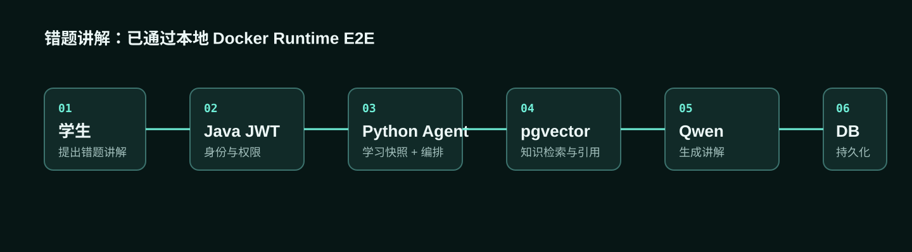

Java 学习快照提供已授权的学习状态。
身份隔离验证通过01 / 从 Demo 到工程闭环
问题不在于缺少更多 AI 功能，而在于链路是否真正接入业务与生产依赖。
之前
Mock 业务上下文 · 内存检索与持久化 · 本地闭环
现在
真实 Java 身份数据 · PostgreSQL · pgvector · Redis Worker · 真模型 · Golden Set · Docker Runtime
02 / 服务边界
Java 管权限与业务数据，Python 管 AI 编排与检索。
Python 不绕过 Java 业务权限；结构化学习数据与知识检索数据分离。

03 / 真实 E2E
以错题讲解为主流程，验证从身份到持久化的完整路径。

| 场景 | 业务上下文 | RAG | 真实 LLM | 持久化 |
|---|---|---|---|---|
| AI 问答 | ✓ | 按需 | ✓ | ✓ |
| 错题讲解 | ✓ | ✓ | ✓ | ✓ |
| 学习建议 | ✓ | 按需 | ✓ | ✓ |
04 / RAG 质量证据
不是“上传 PDF”，而是可追踪、可重建、可评测的知识管道。
21 份 OER 文档 → 52 个切片 → Gemini Embedding → pgvector → 检索与引用 → 44 条 Golden Set
五年级数学 · 分数。指标来自经审批的最终评测集汇总，不公开原始语料与 Golden Set 内容。
05 / 生产工程证据
每个组件都有明确的业务职责。
保存会话、消息、运行记录和用量。
重启持久化验证通过支撑真实课程知识的向量检索。
检索质量 Gate 通过处理异步任务、重试、幂等与恢复。
Worker 集成验证通过Qwen 生成，Gemini 输出 1024 维向量。
真实 Provider Smoke 通过串联 Java、Python、数据库与 Worker。
本地运行时验证通过06 / Runtime Verification
Java · Python API · Worker · PostgreSQL · pgvector · Redis
以上组件作为本地 production-shaped Docker runtime 联合验证；不是公网正式部署声明。
LOCAL RUNTIME VERIFIED
07 / 可信边界
把已验证与尚未验证分开陈述。
已验证
- 本地 Docker Runtime
- Java ↔ Python 服务集成
- PostgreSQL、pgvector、Redis Worker
- Qwen、Gemini Embedding 与 RAG 质量
- 身份隔离与 3 条核心 E2E
尚未验证
- Supabase 真实生产连接
- 公网云部署
- 大规模并发与压测
- 长期真实学习效果与 ROI
08 / 能力证明
让技术结果转译为可审查的业务证据。
AI 方案架构 → Java / Python 服务边界
AI 工程 → LangGraph、RAG 与真实模型
全栈集成 → Next.js、Spring Boot、FastAPI
生产思维 → 身份、回退策略、Worker、评测与运行时 Gate